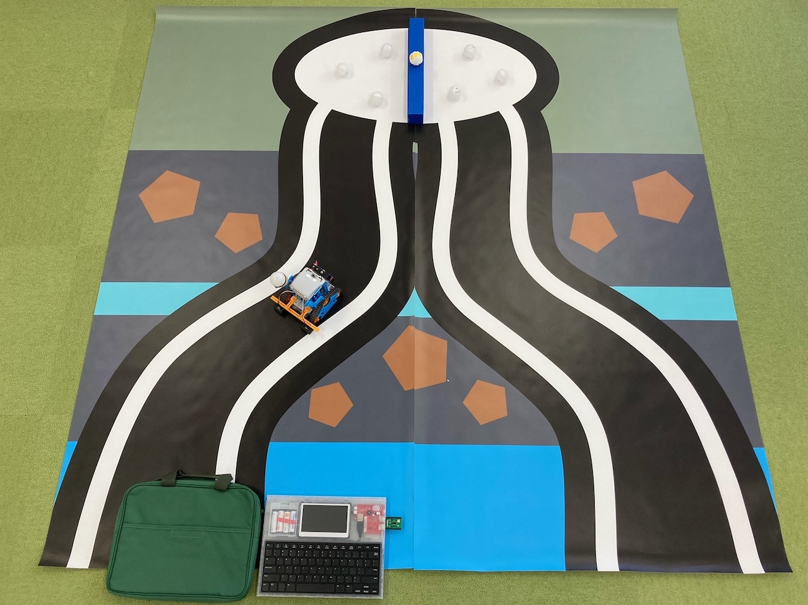

ご当地ロボコンの検討したい・競技の体験会を開催したい等の声に答えるレンタルセットを用意しました。本番コースの 1/4サイズであるミニコースを同梱してあるので、学校の教室などでも体験いただくことができます。
レンタルセット
６〜８名ぐらいの体験者が同時に利用することを想定したセットとなります。この人数を超える場合には、複数組にわけるなどの工夫を行い、機材を適切に扱えるように計画ください。
パッケージ
IchigoJam BASIC によって、カムロボのセンサー・モータをプログラミングして、自立型の動作を行うセットです。簡単なIchigoJamプログラミング、カムロボに接続されているセンサーの説明書が付属します。
- IchigoDyhook＋IchigoDake 10セット
- カニロボ向けカムロボ 10セット
- ミニコース 1コース (片面 180cm x 90cm の 左右2枚組)
ミニコース + カムロボ & IchigoDyhook

レンタル申し込み
当協議会にて、次のセットのレンタルを行っております。料金は、税込価格です（往復の送料はご負担ください）。
レンタルセット
Ａ．ロボット・ミニコース フルセット
- カムロボ10台、IchigoDyhook＋IchigoDake10セット、ミニコース競技セット
- 利用期間：２週間
- 料金：30,000円
- 主な付属品：B と C と同等
- その他：IchigoJam、カムロボは精密機器で壊れやすいため、注意して取り扱いください
B．ミニコース
- ミニコース競技セット
- 利用期間：２週間
- 料金：10,000円
- 主な付属品： 赤白旗、タマゴ、レアメタル、激レアメタル、激レアメタル台、参加者名札 等
C．カニロボ向けカムロボ 10セット
- カムロボ10台、IchigoDyhook＋IchigoDake10セット
- 利用期間：２週間
- 料金：25,000円
- 主な付属品：カムロボ１台につき、タマゴ１つが付属します
- その他：IchigoJam、カムロボは精密機器で壊れやすいため、注意して取り扱いください
以下の追加セットは、A〜Cをレンタルの方に限り追加が可能です。
X．ミニコース 追加セット
- ミニコース競技セット （ミニコース、赤白旗、タマゴ、レアメタル、激レアメタル、激レアメタル台等)
- 利用期間：２週間
- 費用：5,000円
- その他：体験人数・競技回数が多い場合には、コースを２つ用意して、子どもたちが分散できるように計画ください。
X．IchigoDyhook 追加セット
- IchigoDyhook＋IchigoDake 10セット
- 利用期間：２週間
- 費用：10,000円
- その他：体験人数が多い場合には、ロボットを２名に1つの割当にして、パソコンを一人１台用意する際に活用ください。
申し込み
申し込みフォーム にてご連絡ください。折り返し詳細調整をメール・電話でさせていただきます。
購入を検討される方
当協議会では、情報提供・キットのレンタルの扱いを行っています。購入については、レンタルキットの開発元
PCN などにて、各種取り扱いがありますので、直接のお問い合わせをお願いします。
越前がにロボコン 仕様
関連商品
・越前がにロボコンのルールにおいては、自立型で動作するロボットであれば、作成キットやプログラミング言語は問われません。
・ライントレースが可能なロボット、アーテックロボやレゴEV3のように各種センサーを組み立てるロボットでの開催も可能です。
・参加者の自作ロボットから、協力いただける方が所有するロボットの活用まで、幅広く検討ください。